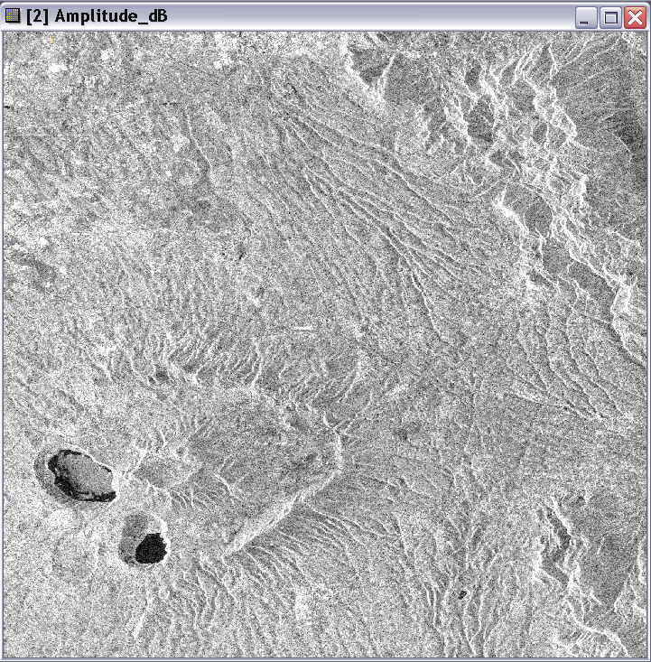
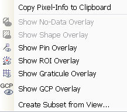

Image View
The image view displays the sample values of raster datasets such as bands and tie-point grids as an image.

By default the horizontal and vertical slider bars are disabled for the image view.
You can activate the sliders again in the preferences dialog in the section
Layer Properties.
If the slider bars are visible you have also a small button in the
lower right corner of the image view which zooms to the fill image bounds if you click on it
The navigation control, which is located in the upper left corner of the image view, can be used to
pan, zoom and rotate the image. The visibility of the control is dimmed if the mouse pointer is not
located over the control and it becomes visible when the mouse gets near the control.
If you rotate the image, you can use the CTRL-Key to change the stepping of the rotation angle from
continuous values to a discrete stepping of quarter of 90°.
The left image shows the dimmed version of the control the right one shows the active control with a rotation.
You can deactivate the navigation control in the preferences dialog in the section Layer Properties
Multiple Windows of the same band
It is possible to open more than one window of the same band to have several views on the band. This can be done
by right-clicking on the band name in the Product Scene View. The windows will be numbered according to their
appearance:

Context Menu
When you right-click the mouse over the image view a popup menu comes up:

Entries:
- Copy Pixel Info to Clipboard - copies all sample values at the current
pixel position, their names and physical units (which you also can see in
the pixel view) to the clipboard
- Show ROI Overlay
- toggles the visibility state of the ROI overlay
- Show Graticule
Overlay - toggles the visibility state of the graticule overlay
- Show Pin Overlay
- toggles the visibility state of the pin overlay
- Create Subset from View - opens a new product subset dialog,
with predefined spatial subset scene from the current image view
Note: The Copy Pixel Info to Clipboard command copies information as tabulator-separated
text
into the clipboard and may therefore be pasted directly into a spreadsheet application (e.g. MS Excel).
On creating an RGB image view you are prompted to select or create a RGB-Profile.
You have also the possibility to create new and change existing profiles in the
user preferences.
Note: The band to be used for each of the channels in the current RGB image view
can be changed at any time in the Contrast Stretch / Color
Palette
window.